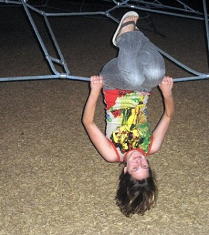

MONICA MIKLAS
Producer
Monica joined Lost Moon Radio in January 2010, when she signed on as the stage manager of Episode 5. Due to her love of spreadsheets and all things Lost Moon, she transitioned quickly into a producing role on Episode 6 and has produced all subsequent Lost Moon live shows. Also in Los Angeles, Monica has stage managed Chess: In Concert (Musical Theatre Los Angeles) and The Devil and Daisy Jane (Hollywood Court Theatre), served as business manager of Spring Awakening (Over the Moon Productions), and interned at film production company Ad Hominem and classical repertory theatre A Noise Within. She holds a BA in Sociology from Stanford University, where she was a member of the student-run Ram's Head Theatrical Society as a stage manager and costume designer, and performed onstage in The Real World: Stanford and Guys and Dolls. In fall 2012, she will begin studies in the MBA/MFA in Theatre Management program at CSU-Long Beach. Then she will probably take over the world.
Monica in Action...

Demonstrating principles of spaceflight.
Talking up the show.